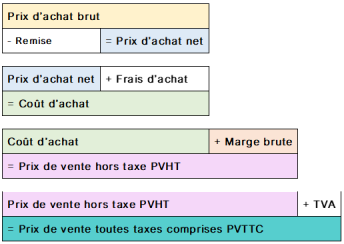

FICHE 3.1 – PEUT‑ON MESURER LA CONTRIBUTION DE CHAQUE ACTEUR À LA CRÉATION DE VALEUR ?
Problématique
Comment une organisation crée‑t‑elle de la valeur, et comment cette valeur est‑elle mesurée et répartie entre les acteurs ?
La valeur perçue
Définition : Valeur perçue
Jugement porté par un client sur l’utilité d’un bien ou service par rapport au prix payé.
Valeur dans l’esprit du client/usager au vue des caractéristiques du bien ou service et des bénéfices qu’il souhaite en retirer.
Complément : Elle dépend :
de la qualité perçue ;
de l’image ;
de la satisfaction ;
de la comparaison avec les offres concurrentes.
Fondamental :
La valeur n’est pas uniquement objective, elle est subjective et relative.
Méthode : Outils d’évaluation de la valeur perçue
Outils traditionnels : notoriété, image de marque, satisfaction, qualité perçue.
Outils numériques : avis clients, recommandations, e‑réputation.
De la valeur perçue au prix de vente
Vocabulaire

Marges et taux de marge
Méthode : Marge commerciale (entreprise de négoce)
Chiffre d’affaires | |
- | Coût d’achat des marchandises vendues |
= | Marge commerciale |
Méthode : Marge brute (entreprise de production ou de services)
Chiffre d’affaires | |
- | Coût de revient |
= | Marge brute |
Méthode : Taux de marge
\(Marge/Coût.d.Achat*100=Taux.de.Marge.Commerciale\)
\(Marge/Coût.de.Revient*100=Taux.de.Marge.Brute\)
Fondamental :
Ces outils servent à analyser la création de valeur, pas à faire de la comptabilité approfondie.
Méthodes de fixation du prix
Une fixation du prix fondée sur les coûts
L’organisation fixe son prix à partir : du coût de production ou d’achat auquel elle ajoute une marge.
Méthode :
Prix de vente = Coûts + Marge
Complément : Cette logique permet :
de couvrir les coûts ;
de dégager un résultat ;
de mesurer la création de valeur financière.
Fondamental :
Cette approche est centrée sur l’organisation et ses contraintes internes.
Une fixation du prix fondée sur le marché (coût cible)
Le marché impose un prix acceptable pour le client.
Méthode :
Coût cible = Prix du marché – Marge souhaitée
Complément : Cette logique :
met l’organisation sous pression ;
oblige à optimiser les processus ;
illustre la contrainte concurrentielle.
Une fixation du prix en combinant les critères
Complément : Fixation du prix de vente
Facteur | Explication |
|---|---|
Les coûts : détermination du prix plancher | Le prix de vente ne peut pas être inférieur aux coûts de production (coût variable + coût fixe imputé), sinon l’entreprise vend à perte. Exception : modèles économiques spécifiques (freemium, gratuité financée par la publicité, stratégie de pénétration agressive temporaire). |
La valeur perçue : détermination du prix plafond | Le prix dépend aussi de ce que le client est prêt à payer, en fonction de :
C’est la logique du prix psychologique et du marketing de la valeur. |
La stratégie de prix | Le prix doit être cohérent avec la stratégie commerciale :
|
Le positionnement dans la gamme | Le prix doit être cohérent avec :
Un produit mal positionné (prix trop bas ou trop haut par rapport à la gamme) brouille la perception du client. |
La valeur financière créée par l’organisation
Le compte de résultat
Définition : Compte de résultat
Document qui mesure la performance financière sur une période donnée.
Méthode :
Résultat = Produits – Charges
Complément :
Produits : ce que l’organisation gagne.
Charges : ce qu’elle consomme pour produire.
Exemple :

Fondamental :
Résultat d’exploitation : reflète l’activité courante.
Définition : Dividendes
Part du bénéfice distribuée aux actionnaires pour rémunérer le risque pris.
Lien direct avec la valeur actionnariale de l’entreprise.
Le bilan comptable et l’équilibre financier
Bilan comptable
Exemple : Bilan comptable

Complément : Le bilan montre :
ce que l’organisation possède (actif),
ce qu’elle doit (passif).
Actif immobilisé et actif circulant
Actif du bilan
L’ACTIF du bilan présente le détail des biens possédés par l’entreprise. Ils sont regroupés en deux grandes catégories :
L’actif immobilisé : biens dont l’entreprise a besoin pour exercer son activité, hormis les stocks qui sont classés en « actifs circulants ». Ces biens immobilisés doivent apparaître au bilan pour leur valeur réelle (colonne 3). Pour cela, il faut déduire de leur coût d’acquisition (colonne 1) l’amortissement, c’est-à-dire la perte de valeur qu’ils ont subie notamment en raison de leur usage (colonne 2). […]
L’actif circulant : il correspond aux éléments liés au cycle d’exploitation, c’est-à-dire à l’activité courante de l’entreprise. Dans cette partie, la valeur n’est pas fixe, mais varie continuellement en cours d’année. On dit que les sommes circulent d’un actif circulant à un autre lors du cycle d’exploitation.
Définition : Amortissement pour dépréciation
L’amortissement pour dépréciation des immobilisations est la traduction comptable, économique et financière de l’amoindrissement de l’investissement. En effet, une immobilisation est une dépense ayant pour but d’améliorer durablement le cycle d’exploitation de l’entreprise ; mais les investissements s’usent du fait de leur utilisation ou sont déclassés du fait de l’évolution technologique.
Pourquoi dit-on qu’il est circulant ?
Créances clients : sommes que les clients nous doivent, mais ne nous ont pas encore payé.
Passif du bilan
Que trouve-t-on dans le Passif du bilan ?
La partie droite du bilan, appelée PASSIF, comprend deux rubriques :
Les capitaux propres qui expliquent l’origine du patrimoine :
Le capital : apports réalisés par les propriétaires ;
Le résultat : activité de l’année ;
Les réserves : activité des années précédentes.
Les dettes :Les emprunts auprès des établissements de crédit ;
Les dettes envers des fournisseurs ;
Les dettes sociales, c’est-à-dire envers le personnel ;
Les dettes fiscales qui concernent celles envers l’État (TVA, Impôts sur les sociétés à payer…), les organismes sociaux (sécurité sociale, France Travail anciennement Pôle Emploi).
Calculer la valeur du patrimoine (différent du montant du bilan)
Bilan avec mise en évidence du patrimoine acquis et des dettes
Méthode : Analyse du patrimoine
L’entreprise s’est constitué un patrimoine composé :
de biens pour un total de 204000€
et de dettes pour un total de (75000+15000+8000+6000) 104000€.
La valeur financière de son patrimoine au 31 décembre 2023 est de 204000 – 104000 = 100000€.
Concernant l’origine de son patrimoine :
les propriétaires ont apporté 60000€ ;
le résultat de l’activité de l’année est positif (il aurait pu être négatif et appauvrir le patrimoine) à hauteur de 25000€ ;
et les réserves des années précédentes sont de 15000€.
La valeur financière du patrimoine est bien de (60000 + 25000 + 15000) 100000€ au 31/12/2023.
Bilan fonctionnel (vision gestion)
Exemple : Bilan comptable simplifié en € (point de départ)
Actif | Montant | Passif | Montant |
|---|---|---|---|
Immobilisations | 50 000 | Capitaux propres | 40 000 |
Stocks | 20 000 | Dettes financières (LT) | 30 000 |
Créances clients | 30 000 | Dettes fournisseurs | 25 000 |
Trésorerie active (banque) | 10 000 | Trésorerie passive (découvert) | 5 000 |
TOTAL ACTIF | 110 000 | TOTAL PASSIF | 110 000 |
LT = Long Terme
Complément : Passage au bilan fonctionnel
On classe les éléments par fonction : financement / investissement / exploitation / trésorerie
Méthode : Les emplois
Emplois | Montant |
|---|---|
Emplois stables (immobilisations) | 50 000 |
Actifs circulants et d’exploitation | |
| 20 000 |
| 30 000 |
Trésorerie active (banque) | 10 000 |
TOTAL DES EMPLOIS | 110 000 |
Méthode : Les ressources
Ressources | Montant |
|---|---|
Ressources stables | |
| 40 000 |
| 30 000 |
Dettes d’exploitation | 10 000 |
| 25 000 |
| 10 000 |
Trésorerie passive | 5 000 |
TOTAL DES RESSOURCES | 110 000 |
Méthode : Calcul des indicateurs clés FRNG, BFR et TN
Fonds de Roulement Net Global (FRNG)
Formule : \(FRNG = Ressources.Stables - Emplois.Stables\)
FRNG = (40 000 + 30 000) - 50 000 soit 70 000 - 50 000 = + 20 000 €
Interprétation :
FRNG positif
Les ressources à long terme financent les investissements
Situation financièrement saine
Besoin en Fonds de Roulement (BFR)
Formule : \(BFR = Actifs.Circulants – Dettes.d.Exploitation\)
BFR = ((20 000 + 30 000) - (25 000 + 10 000) soit 50 000 - 35 000 = +15 000 € (attention on parle ici d’un BESOIN)
Interprétation :
L’activité génère un besoin de financement
Décalage entre encaissements clients et paiements fournisseurs
Situation classique dans une entreprise commerciale
Trésorerie Nette (TN)
Si le Fonds de Roulement Net Global (FRNG) couvre le Besoin en Fonds de Roulement (BFR), alors la Trésorerie Nette sera positive. Dans le cas contraire, elle sera négative.
Méthode principale : \(Trésorerie.nette = FRNG – BFR\)
Calcul : TN = 20 000 – 15 000 = +5 000 €
Méthode de contrôle : \(Trésorerie.nette = Trésorerie.active – Trésorerie.passive\)
TN = 10 000 – 5 000 = +5 000 € (les résultats sont cohérents)
Pour résumer :
FRNG > 0 → structure financière saine.
BFR > 0 → besoin de financement lié à l’activité.
Fondamental : Argumentation
L’organisation dispose d’un fonds de roulement positif, ce qui signifie que ses ressources stables couvrent ses emplois stables. Son activité génère un besoin en fonds de roulement, mais celui‑ci est intégralement financé par le fonds de roulement, ce qui permet d’obtenir une trésorerie nette positive. La situation financière globale est donc équilibrée.
Autres formes de valeur
Valeur boursière
Définition : Entreprise cotée en bourse
Une entreprise est cotée en bourse, lorsqu’elle a émis des titres de propriété pour se financer qui sont placées sur un marché boursier.
Méthode : Calcul de la valeur boursière d’une entreprise
Cours des Actions x Nombre des Actions = Valeur Boursière de l’Entreprise
Attention : Valeur Boursière vs Fonds Propres
La valeur boursière d’une entreprise repose sur la perception des investisseurs, donc sur des anticipations.
Fondamental : Valeur Boursière vs Valeur financière
Si (Valeur boursière / Valeur financière) < 1 anomalie de valorisation et opportunité d’investissement à saisir ;
Si (Valeur boursière / Valeur financière) > 1 anticipation par le marché de futurs bénéfices avec une valeur en bourse supérieure au patrimoine de l’entreprise. C’est typiquement le cas des entreprises autour de l’IA.
Valeur ajoutée
Définition fondamentale
Définition : Valeur ajoutée
Richesse créée par l’organisation grâce à son activité productive.
Méthode : Calcul de la Valeur Ajoutée
Valeur ajoutée = Chiffre d’affaires – Consommations intermédiaires
Fondamental : Répartition de la valeur ajoutée
Acteurs | Apports | Rémunération |
|---|---|---|
Salariés | Savoirs, savoir-faire, savoir-être, compétences, qualifications | Traitements, salaires, cotisations sociales (indirect) |
Prêteurs | Financement de machines de production, de locaux, de leur aménagement… | Intérêts sur emprunts |
Propriétaires / actionnaires | Financement par apports, direction | Part du bénéfice ou dividendes |
L’État | Mise en place d’un cadre favorable (formations scolaires, infrastructure routière, cadre juridique sécurisé…), direction (entreprises publiques, etc.) | Impôts et taxes |
L’organisation | Organisation de la production | Reliquat (ce qui reste) |
Complément : L’économie mondiale (Sophie Piton & Antoine Vatan ; 2019)
Depuis les années 1980, la part de la valeur ajoutée revenant aux salariés recule au profit des actionnaires, en raison d’une gouvernance d’entreprise de plus en plus dominée par les investisseurs institutionnels.
Valeur actionnariale vs valeur partenariale
Définition : Valeur actionnariale
La valeur actionnariale est la part du bénéfice de l'entreprise distribuée aux actionnaires sous forme de dividendes.
Définition : Valeur partenariale
La valeur partenariale prend en compte les intérêts de toutes les parties prenantes de l'entreprise : salariés, clients, fournisseurs, etc.
Complément :
Elle évalue la performance de l'entreprise sur les plans économique, environnemental et social.
Cette approche vise à créer de la valeur pour toutes les parties prenantes, pas seulement pour les actionnaires.
La difficulté réside dans la création d'un outil de mesure capable d'intégrer les intérêts de toutes ces parties prenantes.
Plus le prix payé (prix explicite) par le client est | < | Prix maximum qu’il est prêt à payer (prix d’opportunité) | = | Plus le client est gagnant dans la transaction |
Exemple :
Si le client est prêt à payer 100 € un produit (prix d’opportunité), mais que l’entreprise ne lui facture que 90 € (prix explicite), alors le client a gagné 10 € dans la transaction.
Plus le prix payé au fournisseur (coût explicite) est | > | Prix minimum qu’il est prêt à accepter (coût d’opportunité) | = | Plus le fournisseur est gagnant dans la transaction |
Fondamental :
C’est une approche de la performance qui vise à créer de la valeur pour l’ensemble des parties prenantes de l’entreprise (salariés, actionnaires, clients, fournisseurs, État, société), sans privilégier systématiquement les propriétaires / actionnaires au détriment des autres acteurs.